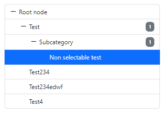

A treeview element for browsers using Javascript. It is based on the bootstrap-treeview libraries of @jonmiles and @patternfly, but is overhauled with typescript and does not use any jQuery.

You can find a real world application using this library here (See the sidebar with three treeviews).
aria-* tags according specificationImport it to your project: yarn add @jbtronics/bs-treeview
Import the bs-treeview library and the style file (example code for webpack):
import {BSTreeView, BS5Theme, FAIconTheme, EVENT_INITIALIZED} from "@jbtronics/bs-treeview";
import "@jbtronics/bs-treeview/src/bs-treeview.css";
You need some data source to populate the treeview: This could be an object structure, created in javascript, an static JSON string created by your website, an endpoint serving an JSON encodes tree structure and so on. See below for an description of the datastructures.
Create the treeview element in your DOM:
<div id="treeview"></div>
Initialize the treeview element:
import {BSTreeView, BS5Theme, FAIconTheme, EVENT_INITIALIZED} from "@jbtronics/bs-treeview";
import "@jbtronics/bs-treeview/src/bs-treeview.css";
//Choose the element on which you want to create the treeview const treeElement = document.getElementById("treeview");
//The data which will be shown in the treeview. For simplicity we use an object structure, but you can load it from anywhere you want const data = [ { text: "Parent 1", state: { expanded: true }, nodes: [ { text: "Child 1", nodes: [ { text: "Grandchild 1", state: { disabled: true } }, { text: "Grandchild 2" } ] }, { text: "Child 2", tags: ["available", "out of stock"] } ] }, { text: "Parent 2" } ]
//Create the treeview const tree = new BSTreeView(treeElement, //The options to apply to our treeView { data: data, //You can either use the callback provided in the options element... onNodeSelected: (event) => { const node = event.detail.node; alert("You selected: " + node.text); }
},
//Themes to use for the BSTreeview. We use Bootstrap5 and FontAwesome5
[BS5Theme, FAIconTheme]
);
//Or attach an event listener to the tree DOM element (The event is triggered on the node and bubbles upwards) treeElement.addEventListener(EVENT_INITIALIZED, (event) => { console.log("The treeview has been initialized"); treeView.expandAll() });
## Options
You can pass various options to the treeview as the second argument of the constructor, to control the behavior of the treeview.
See the [documentation](https://jbtronics.github.io/bs-treeview/classes/bstreeviewoptions.html) of `BSTreeViewOptions` to see which options are possible and what they do.
## Methods
The treeview nodes and the treeview itself can be controlled using various methods of the treeview.
See the [documentation](https://jbtronics.github.io/bs-treeview/classes/bstreeview.html) of `BSTreeView` and the [documentation](https://jbtronics.github.io/bs-treeview/classes/bstreeviewnode.html) of `BSTreeViewNode` for more information.
Most methods take an second argument with an options object. The options object can be used to pass additional parameters to the method, like preventing the triggering of events. See the respective Options class of the method for more information.
## Themes
Themes are presets for the options object, which can be passed as the third argument of the constructor (as an array of themes).
Multiple themes are possible, where the last theme in the array overrides the previous themes. The properties in the options object overrides every theme property.
By default, the treeview uses settings which allows it to render on bootstrap 3-5 (with glyphicons). To use a better styling for modern bootstrap versions
or other icon packs, you can use the following themes:
* [BS5Theme](https://jbtronics.github.io/bs-treeview/classes/bs5theme.html): Use Bootstrap 5's CSS variables to style the treeview
* [FA5Theme](https://jbtronics.github.io/bs-treeview/classes/fa5theme.html): Use FontAwesome 5 icons for the treeview
## Data Structure
In order to define the hierarchical structure needed for the tree it's necessary to provide a nested array of JavaScript objects.
Example:
```javascript
var tree = [
{
text: "Parent 1",
nodes: [
{
text: "Child 1",
nodes: [
{
text: "Grandchild 1"
},
{
text: "Grandchild 2"
}
]
},
{
text: "Child 2"
}
]
},
{
text: "Parent 2"
},
{
text: "Parent 3"
},
{
text: "Parent 4"
},
{
text: "Parent 5"
}
];
At the lowest level a tree node is a represented as a simple JavaScript object. This one required property text will build you a tree.
{
text: "Node 1"
}
If you want to do more, here's the full node specification
{
text: "Node 1",
icon: "glyphicon glyphicon-stop",
image: "something.png",
selectedIcon: "glyphicon glyphicon-stop",
color: "#000000",
backColor: "#FFFFFF",
iconColor: "#FFFFFF",
iconBackground: "#000000",
selectable: true,
checkable: true,
state: {
checked: true,
disabled: true,
expanded: true,
selected: true
},
tags: [
'available',
{text:'not available', class:'disabled'}
],
dataAttr: {
target: '#tree'
}
id: 'something',
class: 'special extraordinary',
hideCheckbox: true,
nodes: [
{},
...
]
}
See documentation of the respective properties in the BSTreeViewNode class for more information.
Furthermore you can pass any other property to the node, but it will be ignored by the treeview, but passed to the node element, and can for example be accessed inside event handlers.
The treeview fires events when the treeview is initialized, when a node is selected or when a node is expanded or collapsed.
Global events are dispatched on the treeview element, node events on the respective node element. The event bubbles the DOM upwards, so you can attach an event listener to the treeView element to catch all node events of the treeView. You can even attach an event listener to the document, to catch the events of all treeViews on the page.
Every event name has a EVENT_ prefixed, constant which can be imported and used in your code.
Every event passes the treeView object on which the event was triggered in event.detail.treeView.
Every event has a handler parameter in the option object which is initially passed to the constructor of the treeview (e.g. the onNodeSelected property is called when a EVENT_NODE_SELECTED event is triggered).
| Event constant | Event name | Description |
|---|---|---|
EVENT_LOADING |
bs-treeview:loading |
The tree has initiated data loading |
EVENT_LOADING_FAILED |
bs-treeview:loadingFailed |
The tree failed to load data (ajax error). In event.detail.data the exception is passed |
EVENT_LOADED |
bs-treeview:loaded |
The tree has initialized itself and data ready for rendering. In event.detail.data a flat list of all nodes is passed |
EVENT_RENDERED |
bs-treeview:rendered |
The tree is rendered. In event.detail.data the list of rendered nodes is passed |
EVENT_DESTROYED |
bs-treeview:destroyed |
The tree is being destroyed |
EVENT_SEARCH_COMPLETED |
bs-treeview:searchCompleted |
The search has completed. In event.detail.data the list of found nodes is passed |
EVENT_SEARCH_CLEARED |
bs-treeview:searchCleared |
The search has been cleared |
For every node event you can find the node object in event.detail.node.
| Event constant | Event name | Description |
|---|---|---|
EVENT_NODE_RENDERED |
bs-treeview:nodeRendered |
The node is rendered |
EVENT_NODE_CHECKED |
bs-treeview:nodeChecked |
The node is checked |
EVENT_NODE_UNCHECKED |
bs-treeview:nodeUnchecked |
The node is unchecked |
EVENT_NODE_SELECTED |
bs-treeview:nodeSelected |
The node is selected |
EVENT_NODE_UNSELECTED |
bs-treeview:nodeUnSelected |
The node is deselected |
EVENT_NODE_EXPANDED |
bs-treeview:nodeExpanded |
The node is expanded |
EVENT_NODE_COLLAPSED |
bs-treeview:nodeCollapsed |
The node is collapsed |
EVENT_NODE_DISABLED |
bs-treeview:nodeDisabled |
The node is disabled |
EVENT_NODE_ENABLED |
bs-treeview:nodeEnabled |
The node is enabled |
bs-treeview:, so the event nodeSelected becomes bs-treeview:nodeSelected(event: Event) => void for the handlers. You can access the data part of the event using event.detail.datalevels option, of how many levels should be expanded automatically, is now 1 instead of 2 (meaning no levels are expanded automatically).initialized anymoreinitialized event is now dispatched after all nodes were rendered (therefore afterwards the render event is dispatched)bs-treeview is licensed under Apache 2.0 license. This means you can use it for free and redistribute it, without much restrictions. See LICENSE for more information.
bs-treeview is based on the bootstrap-treeview library of @jonmiles and @patternfly.
Generated using TypeDoc